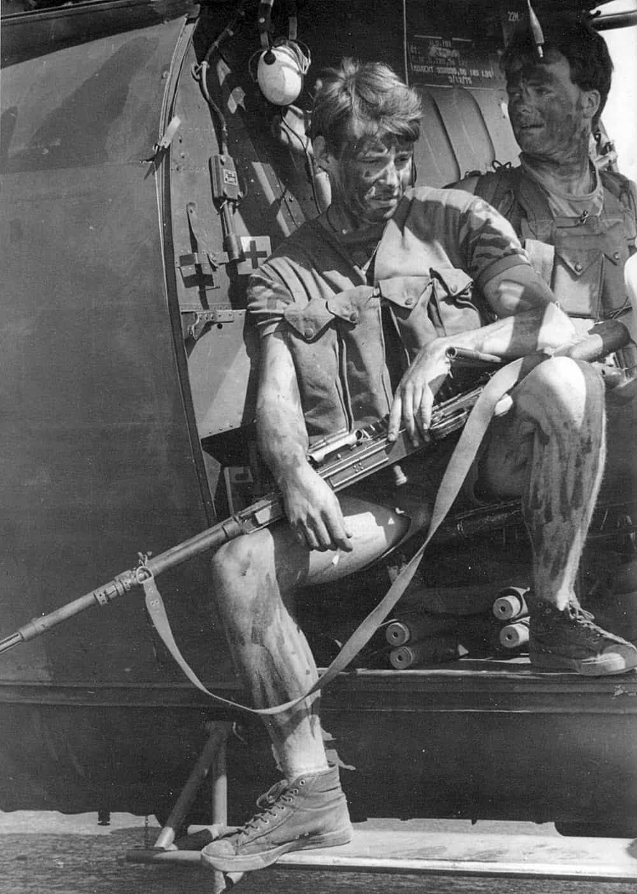

Kiron is a somber European man who devotes most of his time to making money, reading, working out and plotting revenge against the people who turned the world upside down.


To modern generations, Rhodesia is just a name. Few know what it was, even fewer can find it on the map. Those who caught the Cold War might recall bits and pieces of information, little of it true or trustworthy. And yet, history of this country’s birth, struggle and demise contains a lesson that is, now more than ever, extremely valuable – especially to those still enamored with modern political games.
In 1890, a column of 380 rugged men crossed the Limpopo River and marched northwards. Their leader, a British mining tycoon Cecil Rhodes, had just received a Queen’s charter for his British South African Company to explore and govern these wild lands. Eventually, the Union Jack was planted into the ground, marking the foundation of Fort Salisbury. It took some time and plenty of fighting, negotiations and quelled uprisings, but ultimately the two local tribes – Matabele and Shona – were forced to cease their endless wars and coexist in grudging peace, while whites acquired land for farming and raising cattle.
Unlike other territories governed by the British Crown, this one was not a colony but rather private property of Cecil Rhodes and his company. Likewise, unlike British colonies, this one attracted serious, determined and hardy people rather than lowlifes, criminals and fortune-seekers. After Rhodes’ death, the territory was named in his honor. Northern and northeastern parts of it were at one point handed over to the Crown as protectorates, while Southern Rhodesia, as it became known, remained nominally independent.
Despite considering themselves to be “The Great White Tribe” and a separate people, Rhodesians, being mostly of Anglo-Saxon stock, retained fierce loyalty to Britain. When WWI broke out, 5000 men – approximately 25% of their population – volunteered to fight under the British flag.
After the war, Southern Rhodesia flourished. Its economy was well-developed and racial troubles, despite past conflicts, were nearly nonexistent. London, heartened by Rhodesians’ wartime contributions, gave them a choice: join the South African Union as its fifth province or become a self-governing territory with a “responsible government” (full privileges except for foreign policy). The referendum held in 1922 revealed that Rhodesians would rather live separately.
Idi Amin, Samora Machel, Kenneth Kaunda, Kwame Nkrumah, Jomo Kenyatta and Julius Nyerere. Dictators, terrorists and thieves – Britain was very picky when it came to choosing friends.
After World War II, when nationalist movements began to gain strength in Africa, London attempted to create a new public entity – the Federation of Rhodesia and Nyasaland. This experiment disintegrated miserably in 1963, and Southern Rhodesia got its status of a special dominion back. The federation’s former constituents were hastily given independence – all except one. Rhodesians were instead admonished for failing to sustain the stillborn state. Such was Britain’s gratitude for over 25,000 capable Rhodies volunteering to fight on its side in WWII.
In the 1950s, the process of decolonization was launched. The West’s combination of fatigue from two world wars, general lack of political will and reluctance to deal with external issues led to declarations of independence getting distributed to African colonies like hot cakes. Transition from colony to state sometimes happened in less than a month. The world welcomed the “liberation” while timidly avoiding the resulting chaos, mass murder and civil wars.
Simply put, African countries could not handle the gift of independence. In addition, the very notion of races being different was deemed unacceptable in the West. A man labeled a racist could not count on a good public career, etc. Of course, this applied only to whites – tribal warfare and genocides in nascent African countries were politely ignored.
While the West was busy prostrating itself before cannibalistic tyrants and warlords, USSR and China wasted no time in making them dance to their tune. Communist agents and ideologues actively formented uprisings and wars in Africa, exchanging arms for access to natural resources. Most African “leaders” never realized their countries’ transformation back into colonies, albeit under a different owner.
Rhodesians, who lived in a peaceful, quiet and largely problem-free country, could only look upon the unfolding events in horror. Since the end of the 19th century and until 1962, Rhodesian policemen were unarmed. Self-government was carried out with the help of tribal leaders and local administrations. Unemployment was minimal, skilled immigration high, and in terms of living standards Southern Rhodesia outpaced nearly all of Africa. Rhodesian agricultural products were highly valued worldwide – marbled beef was considered a delicacy, wines competed with South Africa’s own, and neighboring countries were supplied in abundance with maize, tea and tobacco.
Apartheid, the world’s boogeyman, never existed in Southern Rhodesia, and neither did acute racial tensions – the vast majority of blacks simply did not care that they were ruled by Whites, as long as the latter kept building schools, hospitals and providing them with work and housing. However, the so-called civilized world was not happy with this, and Britain especially so.
Hatred that British diplomats David Owen and Harold Wilson had for the small African state bordered on pathological. To an average Rhodesian, these two were no better than Mugabe and Nkomo.
Under pressure from the Organization of African Unity (a club of cannibals if there ever was one), Britain took back its promise of independence to Rhodesia, on the grounds that it should be ruled by the black majority rather than the white minority. Rhodesia’s 40-year experience of sensible self-government, regular free elections and peaceful coexistence between races was callously ignored.
To pacify the “polite society” and the OAU, Britain was prepared to surrender Rhodesia to African dictators’ tender mercies. What it was not prepared for was the tiny country itself deciding to take the bull by the horns. In 1964, the Rhodesian Front party, led by a WWII hero Ian Smith, was elected into power. On November 11, 1965, after lengthy and unsuccessful negotiations aimed at finding a solution that suited everyone, Ian Smith unilaterally declared Rhodesia’s independence.
This move caught the West completely off-guard, and was immediately branded a “racist revolt”. British political opossums did all in their power to impose an international economic embargo on Rhodesia and fight its recognition. However, South Africa (itself a pariah state) and Portugal expressed their support for the new country and resumed their already well-established trade relations with it.
Britain’s tantrums and whining gave the communist bloc a perfect excuse to start openly funding and arming black terrorist organizations aimed at overthrowing the Rhodesian government. Robert Mugabe’s ZANU received help from China and North Korea, while Joshua Nkomo’s ZAPU was assisted and advised by USSR. The two movements, being comprised respectively of Shona and Matabele peoples, were bitter enemies, with a common goal the only thing uniting them.
The West itself had cold feet about direct military intervention against the upstart state, for two good reasons. Firstly, the Rhodesians were well-known for their fighting prowess and relentlessness – during WWII, they formed the backbone of British commandos in North Africa. Secondly, there was a threat of rebellion in Britain’s own armed forces, as family ties between Brits and Rhodesians were extremely close. Therefore, the West confined itself to denouncements, resolutions, political trickery and supplying terrorists with food and gear.

At first the conflict was limited to sporadic attacks, armed robberies and murders, but due to generous support from both East and West, it quickly evolved into full-scale war. Mozambique, Botswana, and Zambia eagerly provided terrorists with staging grounds for their raids on Rhodesian farms and border villages. With the help of sympathizing mass media, terrorists tried to inform everyone that a new Chimurenga was on – a war of liberation similar to the one their ancestors waged at the end of the 19th century against the “white invaders”.
Naturally, nobody cared that these same invaders had turned a barren territory into a developed land, that it was thanks to them the vast majority of local blacks had jobs, and that the main victims of this “liberation” were primarily blacks themselves – ordinary farmers, herdboys, priests and doctors.
To combat the terrorist threat, the Rhodesian Security Forces had to develop a unique fighting method, eventually becoming the most efficient military force of all that ever appeared south of the Sahara Desert. For all intents and purposes, they set an impossible standard – sometimes Rhodesian Light Infantry paratroopers flew three combat sorties a day (!), while the Selous Scouts managed to exterminate 70% of all who ever took up arms against Rhodesia over the 7 years of the unit’s existence.
But despite the wonders worked by its soldiers, fighting against what amounted to the entire world was extremely difficult for an unrecognized country with very limited resources. Contrary to media portrayals of him, Ian Smith was no rogue autocrat; he was open both to negotiation and the idea of reconciliation, but only on terms favorable to Rhodesia. In the endless talks that served as a backdrop to the 15-year war, his opponents never failed to take advantage of his honesty.
British diplomats’ favorite trick was to sign an agreement with Smith, ensure he kept his side of the bargain and then conveniently forget about theirs. American President Jimmy Carter was no better, refusing to acknowledge Smith at all but eagerly providing political platforms and assistance to both Mugabe and Nkomo.
Western media spared no expense in demonizing Rhodesia, either: journalists would photograph blacks sleeping in Salisbury parks during siesta and then claim they had been shot by Rhodesian soldiers. A particularly despicable bunch of presstitutes once tossed a few coins into a garbage bin in front of some black kids, who, upon attempting to retrieve them, made the world’s headlines as “children starved by the Smith regime”.
As for layers of filth heaped upon Rhodesia by humanitarian and religious organizations, they are too numerous to even begin to describe. The UN and the World Council of Churches united the entire West’s charity workers and do-gooders in an effort to feed and clothe the terrorists, who returned the favor by massacring as many Rhodesian priests, charity workers and do-gooders as they could.
Prime Minister Ian Smith at Victoria Falls, after yet another bout of pointless negotiations.
Embittered by constant betrayals from those they once viewed as friends and allies, Rhodesians grimly fought on until they no longer could. With the country’s oil reserves depleted, Ian Smith had no choice but to cave to international pressure and negotiate formation of a new government. The 1979 election resulted in Abel Muzorewa, a black bishop, becoming the new prime minister, and the country renamed to Zimbabwe-Rhodesia. Theoretically, black majority rule – the condition for lifting the economic embargo – was achieved.
The Organization of African Unity, however, was not so easily pleased, as neither Mugabe nor Nkomo were allowed to participate in the election, for the obvious reason of being terrorists. All it took was a promise to sway black American voters in Jimmy Carter’s favor and a threat of halting Nigerian oil shipments to Britain for the two superpowers to immediately come to heel. The embargo remained in place. With the “assistance” of the British government, new negotiations began, as a result of which Muzorewa’s government resigned, and at the beginning of 1980 a new election was scheduled.
The election campaign’s motto was simple – vote Mugabe or die along with your family. Terrorists ran rampant across the country, spreading the message at gunpoint. Voter intimidation was ubiquitous, but London declared the elections to be the most transparent and honest of all conducted on the African continent.
In the meantime, “international observers” from the British Commonwealth were making sure the Rhodesian army was disarmed, while politely ignoring Mugabe’s gun-toting goons. Immediately after a landslide victory, Mugabe rallied his forces and began exterminating the rival Matabele tribe, killing over 25 000 and turning many more into refugees. London let it slide.
The rest is history: it took the creature hailed by the entire world as a freedom fighter less than a decade to turn the Breadbasket of Africa into a basket case. White Rhodesians fled “Zimbabwe” in their entirety; of course, not a single British or American politician deigned to as much as apologize to them for what had been done to their country. The West simply carries on, fiercely proud of its policies and laws being democratic, impartial and fair… until they’re not.
Special thanks to Sergey “Tiomkin” Karamaev for providing data and historical context for this article.
Read More: Valor of Rhodesia’s Selous Scouts